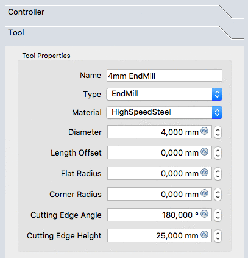
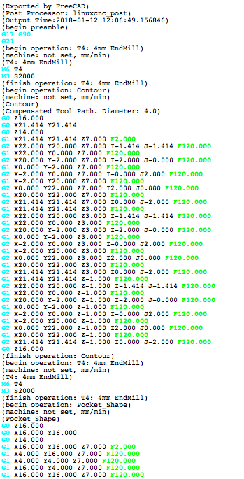

CAM Walkthrough for the Impatient
- Topic
-
środowisko pracy CAM
- Level
-
początkujący / średnio zaawansowany
- Time
-
15 minut
- Author
-
Chrisb
- Fcversion
-
0.19
- Files
-
brak
Przeznaczenie
Demonstracja tworzenia Zadania środowiska pracy  CAM na podstawie modelu 3D. Następnie generowanie poprawnego dialektycznie G-Code dla docelowej frezarki CNC.
CAM na podstawie modelu 3D. Następnie generowanie poprawnego dialektycznie G-Code dla docelowej frezarki CNC.
Model 3D
1. Projekt rozpoczyna się od prostego modelu FreeCAD zaprojektowanego w środowisku pracy  Projekt Części prostopadłościanu z kieszenią w kształcie prostokąta,
Projekt Części prostopadłościanu z kieszenią w kształcie prostokąta,
::

::
Powyżej: Prostopadłościan z kieszenią utworzony w środowisku pracy  Projekt Części obejmujący Zawartość, na podstawie szkicu zorientowanego w
Projekt Części obejmujący Zawartość, na podstawie szkicu zorientowanego w  płaszczyźnie XY.
płaszczyźnie XY.
2. Po ukończeniu modelu 3D przełącz się na środowisko  CAM poprzez (menu rozwijane) wyboru środowiska pracy
CAM poprzez (menu rozwijane) wyboru środowiska pracy
Zadanie
3. Teraz tworzymy Zadanie za pomocą jednej z następujących metod:
-
Naciskamy przycisk
 Zadanie z paska narzędzi.
Zadanie z paska narzędzi. -
Używając skrótu klawiaturowego P, a następnie J.
-
Używając polecenia z menu głównego .

:: ;;
Powyżej: Okienko dialogowe Utwórz zadanie
4. Zostanie otwarte okno dialogowe edycja zadania. W tym oknie dialogowym kliknij OK, aby zaakceptować Zawartość jako model podstawowy, bez szablonu.
Konfiguracja
5. Okno Edycja zadania zostanie otwarte w oknie zadań, a w oknie widoku modelu zostanie wyświetlony element materiału jako prostopadłościan szkieletu otaczający podstawową Zawartość. Zostanie wybrana karta Konfiguracja.
Wyjście zadania
6. Zakładka Wyjście definiuje ścieżkę pliku wyjściowego, nazwę, rozszerzenie i postprocesor. Zaawansowani użytkownicy mogą dostosować Argumenty postprocesora (wskazanie kursorem myszki powoduje wyświetlenie podpowiedzi typowych argumentów).
::

Powyżej: Okienko dialogowe Edycja zadania z wybraną zakładką '''Wyjście'''
Narzędzia
::

Powyżej: Okienko dialogowe Edycja zadania z wybraną zakładką '''Narzędzia'''
7. Zmodyfikuj domyślne narzędzie, zaznaczając je i klikając przycisk Edycja. Spowoduje to otwarcie okna Edytor kontrolera narzędzi.
::

Powyżej: Okienko dialogowe Edycja zadania Kontrolera narzędzi
8. Nazwa nadana narzędziu i numer narzędzia odpowiadają numerowi narzędzia maszyny. W oknie dialogowym (patrz wyżej) jest to narzędzie nr 4. Sterownik narzędzia jest skonfigurowany dla posuwu poziomego i pionowego 2mm/s i prędkości wrzeciona 2000 rpm.
9. Wybierz zakładkę Narzędzia w Kontrolerze narzędzi. Ustaw średnicę (a jeśli chcesz użyć narzędzia  Symulator później: dodaj kąt krawędzi tnącej i wysokość krawędzi tnącej).
Symulator później: dodaj kąt krawędzi tnącej i wysokość krawędzi tnącej).
::

Powyżej: Okienko dialogowe Edycja zadania Kontrolera narzędzi i zakładka '''Narzędzia'''
10. Wartości są potwierdzane przyciskiem OK.
Uwaga: Aby ułatwić dostęp, wszystkie narzędzia można wstępnie zdefiniować i wybrać z  Menadżera narzędzi.
Menadżera narzędzi.
Plan pracy
Zakładka Plan pracy jest początkowo wyświetlana jako pusta. Następnie jest wypełniana sekwencją operacji zadania, częściowych poleceń CAM i elementów wykończenia CAM. Kolejność tych elementów jest tutaj uporządkowana.
To drzewo jest wyświetlane po konfiguracji zadania, po rozwinięciu zadania CAM:
::

Operacje ścieżki
11. Dwie operacje zostaną dodane w celu wygenerowania ścieżek frezowania dla tego zadania ścieżki. Operacja Kontur tworzy ścieżkę wokół prostopadłościanu, a operacja Kształt kieszeni tworzy ścieżkę dla wewnętrznej kieszeni.
12. Na razie zachowamy prostotę. Przycisk  Kontur otwiera panel Kontur. Po potwierdzeniu przyciskiem OK przy użyciu domyślnych wartości, widoczna jest zielona ścieżka wokół obiektu.
Kontur otwiera panel Kontur. Po potwierdzeniu przyciskiem OK przy użyciu domyślnych wartości, widoczna jest zielona ścieżka wokół obiektu.
13. Wybranie spodu kieszeni, a następnie przycisku  Kształt kieszeni otwiera okno Kształt kieszeni. Używane są domyślne wartości Geometrii bazowej, Głębokości i Wysokości, wybrana jest zakładka Operacja, a wartość procentowa Kroku nad jest ustawiona na wartość 50.
Kształt kieszeni otwiera okno Kształt kieszeni. Używane są domyślne wartości Geometrii bazowej, Głębokości i Wysokości, wybrana jest zakładka Operacja, a wartość procentowa Kroku nad jest ustawiona na wartość 50.
::

Powyżej: Okno dialogowe Kształt kieszeni z wybranym panelem Operacja
14. Wzór zostanie zmieniony na "Odsunięcie", a zadanie dla konfiguracji kieszeni zostanie potwierdzone przyciskiem OK.
Rezultatem jest model z dwiema ścieżkami:
::

Powyżej: wynik dla modelu z dwiema ścieżkami
Sprawdzanie ścieżek
Istnieją dwa sposoby weryfikacji utworzonych ścieżek. Można sprawdzić G-code, w tym podświetlić odpowiednie segmenty ścieżki. Proces frezowania zadania CAM może być również symulowany w celu zademonstrowania wyidealizowanych ścieżek narzędzia, wymaganych dla geometrii narzędzia do frezowania materiału.
Aby sprawdzić G-Code użyj narzędzia  Przeglądaj polecenia CAM. Wybranie odpowiednich linii G-code w oknie G-code podświetla poszczególne segmenty ścieżki.
Przeglądaj polecenia CAM. Wybranie odpowiednich linii G-code w oknie G-code podświetla poszczególne segmenty ścieżki.
::

Powyżej: Narzędzie Przeglądaj polecenia ścieżki otwiera okno dialogowe G-code
Aby rozpocząć symulację, użyj narzędzia  Symulator CAM.
Symulator CAM.
Dostosuj prędkość i dokładność i rozpocznij symulację za pomocą przycisku  (Play).
(Play).
::

Powyżej: Symulacja CAM w toku
Jeśli chcesz zakończyć symulację, kliknij przycisk Anuluj, co spowoduje usunięcie półproduktu utworzonego na potrzeby symulacji. Jeśli klikniesz przycisk OK, obiekt ten zostanie zachowany w zadaniu.
Przetwarzanie końcowe zadania
Ostatnim krokiem do wygenerowania G-code dla docelowej frezarki jest postprocessing zadania. Powoduje to przesłanie G-code do pliku, który można przesłać do docelowego sterownika maszyny CNC. Aby wywołać postprocesor:
-
Wybierz obiekt Zadanie w oknie Widoku drzewa.
-
Wybierz narzędzie
 Przetwarzanie końcowe do przetwarzania pliku. Spowoduje to otwarcie okna G-code umożliwiającego sprawdzenie końcowego pliku wyjściowego przed jego zapisaniem.
Przetwarzanie końcowe do przetwarzania pliku. Spowoduje to otwarcie okna G-code umożliwiającego sprawdzenie końcowego pliku wyjściowego przed jego zapisaniem.
::

Powyżej: Okno G-code umożliwiające przeglądanie końcowego pliku wyjściowego